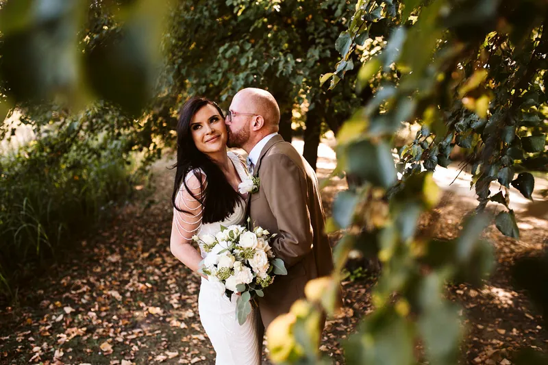

Ślub humanistyczny
Ceremonia w miejscu, które sami wybierzecie: w ogrodzie, dworze, skansenie, na łące albo na plaży. Bez sztywnych formułek, z przemowami bliskich i rytuałem, który coś dla Was znaczy. Połączona ze ślubem cywilnym nabiera mocy prawnej.
- Prowadzenie ceremonii ślubnej
- Opracowanie scenariusza
- Wybór przysięgi i rytuału
- Ślub last minute